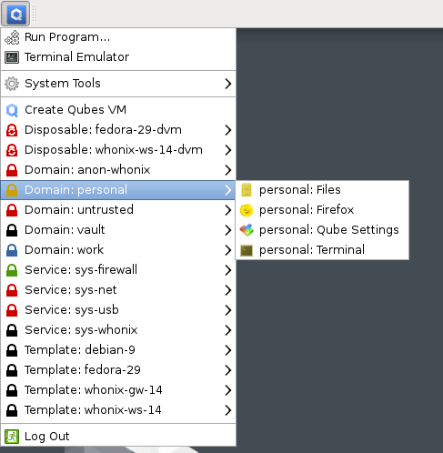
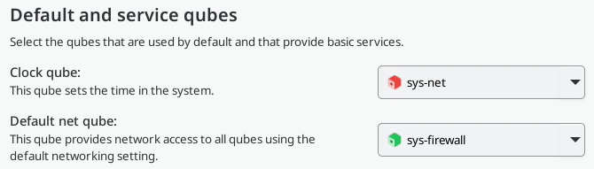
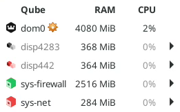
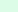
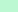
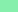

Usability & UX Guidelines
Unnecessary complexity and bad UI often scare users away from good software. To avoid this terrible fate, please always take usability and good user experience into account when contributing to Qubes OS.
If you plan to contribute to GUI tools, please read these guidelines. Additional information can also be found in our visual style guide.
Ease of Use
In open source software, a good user interface should not only enable users to achieve their goals, but also allow them to remain in control of the process. The UI should neither overwhelm the users with the amount of information presented nor hide important context from them. In the words falsely attributed to Albert Einstein: our goal is to make things as simple as possible, but not simpler. Make things simple, but removing important elements in the name of simplicity or getting rid of valuable functionality for simplicity's sake is making them too simple.
Make sure that the UI you design adheres to the following principles.
Do not waste the user's time
- the program should not require extensive configuration
example: you don't need to set the policy directory used by the Qubes Policy Editor - the program lists available policy files for you
- the most typical and most recommended workflows should require the least user time and attention
example: Create New Qube opens at the typical use-case (a new app qube) with options such as "template" and "networking" set to system defaults; the user only has to enter qube name and click
Create
- the defaults should be sensible - they should work for most use cases and not require changes in most situations, if at all possible
example: default settings for newly created qubes
- minimize repetitiveness: if possible, avoid multiple clicks or multiple steps for operations that can be implemented with less clicks/steps
example: in the
Devices widget, if a device is already attached to a qube, you have an option toDetachthe device, but also toDetach and Attachto another qube - the user doesn't have to do two actions, but only one
Make the UI resilient to errors
users should not be able to break the program (or the entire system) or enter an unrecoverable state
users should not be able to compromise the integrity and security of their system accidentally
as far as possible, there should be a possibility to undo actions
if some actions cannot be undone (for example deleting a qube), they should be impossible to perform accidentally (in case of Qubes OS, you have to type the qube name to delete it, even using GUI tools)
the defaults should be reasonably secure
avoid leaving users stranded - if there is an error message, there should also be guidance on how to recover or (preferably) an actionable solution
Reduce cognitive load
- show only the relevant information
example: domains widget does not show qubes that are not running and not consuming resources
- use simple and understandable language
when in doubt, like the author of this document, always use the simpler word and don't write like it's a master's thesis in English literature
- make it easy to discover and understand features and available options
example: Qubes Global Config aims to show and describe multiple configuration settings that otherwise were only available via CLI and knowing about them
- do not expect the user to remember: remind them of past actions and choices
example: during the update process, show which qubes are being updated right now, which are still queued for updated and which are done updating
- the defaults should make sense for most use cases and not require the user to verify them thoroughly
example: a new qube will use the default template and default networking settings
Language
There will always be the need to communicate things to users. In these cases, an interface should aim to make this information easy to understand. The following are simple hints to help achieve this - as with any writing advice, those are guidelines, not laws.
Avoid acronyms
Acronyms are compact and make good names for command line tools, but until the user learns an acronym’s meaning, it is gibberish. Avoid introducing new acronyms, unless necessary, and provide explanations if the acronym is uncommon. Some acronyms are more familiar than the full name - it is strongly recommended to use USB instead of Universal Serial Bus, for example.
Use simple words
Use the minimum amount of words needed to be informative. Go with common words that are as widely understood. "Unneeded" is better than "superfluous", "correct" is better than "rectify" and "pointless" is better than "nugatory".
Follow current Qubes OS terminology
use disposable [qube] instead of
DVMorDisposable Virtual Machineuse networking or net qube instead of
NetVMuse qube instead of
virtual machine,container,domainordomUuse terminology consistent with other user-facing tools, not necessarily with internal programming details
Avoid technical words
Technical words are usually more accurate, but they often only make sense to technical users and are confusing and unhelpful to non-technical users. Strive for accuracy and usefulness above strict technical correctness. If at any point you wish to add to a label a "well, actually", resist the temptation.
- Prefer a common, understandable concept to detailed technical explanations of a particular implementation
使用
disk space代替root.img，因為雖然不完全精確，但在上下文中有意義使用
saving代替savefile，因為前者是要完成的操作使用
Qubes代替qrexec-daemon，因為它能更好地提供正在發生的事情的上下文
Avoid redundancy
do not over-use words like
qubeordomainin long listsit is preferable to create common categories/headers than to repeat a single category multiple times

System menu in Qubes 3.2 used to make both of those mistakes: redundant 'domain' prefix and no category headers.
Usability and Accessibility
Usability and accessibility are always tied together. When designing interfaces for Qubes OS, follow general good UI practices, striving for understandability, clarity of interactions, avoid surprising the user, avoid - as far as possible - actions that cannot be undone and strive to make it easy to do the correct/secure action and difficult to do the insecure action.
Use the checklist below to verify fundamental accessibility and usability principles:
- visual readability
there is sufficient contrast between text and background (use WCAG level AA guidelines as minimum when in doubt)
UI remains readable in dark mode and in light mode
- color independence
important information is never communicated solely through color: labels, text, shapes etc. accompany all color-coded information
- text scaling support
the program works for large font sizes (including what you might consider absurdly large)
- keyboard/mouse accessibility
all actions can be reached and performed when using only the keyboard and only the mouse without exorbitant leaps of logic or reading the documentation
tab-order for controls is logical
- focus visibility
it is always visible which element has focus, when using keyboard navigation
focus is not irrevocably lost on some operations
- clarity and communication
language used in the GUI is clear, understandable and simple; avoid complex sentences and overly complex vocabulary
error messages are specific and visible; if possible, errors are accompanied by information about how to recover from them (ideally, this would be done automatically, but of course this is not always possible)
validation is always clearly communicated: the user can easily understand why certain inputs are incorrect
error and validation feedback does not rely on timing
Consistency and UI Elements
Concepts, names, icons, interaction patters and styling should be consistent across different tools. When in doubt, pattern the behavior of your application on other Qubes OS tools.
Particular GUI patterns used in Qubes OS are:
Qube names
Qube name should be whenever possible accompanied by the appropriate qube icon in the correct color.
Examples:

Dropdowns in Qubes OS Global Config contain icons. Always use existing dropdown widgets if possible: they generally already provide the icon display.
In Create New Qube Dialog, selected network qube is displayed with its icon and also with the qube color used to color the qube name, to reinforce the qube-label association.

In the domains widgets, every qube is always accompanied by its icon.
Icons
Core of Qubes OS Icon Set is the set of qube-related icons that can be found in the qubes-artwork repository.
Those icons represent possible qube classes and colors. For mapping of qube icon to qube type, see the 詞彙表.
Most symbolic icons in Qubes GUI are taken from lucide.dev (MIT-licensed open source icon set).
The following stroke width is generally recommended for the following icon sizes (adjusted when needed for clarity and cohesion):
16px = 1.5px stroke
24px = 2px stroke
32px = 3px stroke
48px = 4px stroke
64px = 6px stroke
If any further icons are needed, base them on lucide.dev icon set.
Colors
For GUI elements, use the following subset of Tailwind color system (from Tailwind CSS system).
Color |
50 |
100 |
200 |
300 |
400 |
500 |
600 |
700 |
800 |
900 |
950 |
|---|---|---|---|---|---|---|---|---|---|---|---|
Gray |
gray-50
#f9fafb
|
gray-100
#f3f4f6
|
gray-200
#e5e7eb
|
gray-300
#d1d5db
|
gray-400
#9ca3af
|
gray-500
#6b7280
|
gray-600
#4b5563
|
gray-700
#374151
|
gray-800
#1f2937
|
gray-900
#111827
|
gray-950
#030712
|
Neutral |
neutral-50
#fafafa
|
neutral-100
#f5f5f5
|
neutral-200
#e5e5e5
|
neutral-300
#d4d4d4
|
neutral-400
#a3a3a3
|
neutral-500
#737373
|
neutral-600
#525252
|
neutral-700
#404040
|
neutral-800
#262626
|
neutral-900
#171717
|
neutral-950
#0a0a0a
|
Red |
red-50
#fef2f2
|
red-100
#fee2e2
|
red-200
#fecaca
|
red-300
#fca5a5
|
red-400
#f87171
|
red-500
#ef4444
|
red-600
#dc2626
|
red-700
#b91c1c
|
red-800
#991b1b
|
red-900
#7f1d1d
|
red-950
#450a0a
|
Orange |
orange-50
#fff7ed
|
orange-100
#ffedd5
|
orange-200
#fed7aa
|
orange-300
#fdba74
|
orange-400
#fb923c
|
orange-500
#f97316
|
orange-600
#ea580c
|
orange-700
#c2410c
|
orange-800
#9a3412
|
orange-900
#7c2d12
|
orange-950
#431407
|
Yellow |
yellow-50
#fefce8
|
yellow-100
#fef9c3
|
yellow-200
#fef08a
|
yellow-300
#fde047
|
yellow-400
#facc15
|
yellow-500
#eab308
|
yellow-600
#ca8a04
|
yellow-700
#a16207
|
yellow-800
#854d0e
|
yellow-900
#713f12
|
yellow-950
#422006
|
Green |
green-50
#f0fdf4
|
 green-100
#dcfce7
|
 green-200
#bbf7d0
|
 green-300
#86efac
|
green-400
#4ade80
|
green-500
#22c55e
|
green-600
#16a34a
|
green-700
#15803d
|
green-800
#166534
|
green-900
#14532d
|
green-950
#052e16
|
Blue |
blue-50
#eff6ff
|
blue-100
#dbeafe
|
blue-200
#bfdbfe
|
blue-300
#93c5fd
|
blue-400
#60a5fa
|
blue-500
#3b82f6
|
blue-600
#2563eb
|
blue-700
#1d4ed8
|
blue-800
#1e40af
|
blue-900
#1e3a8a
|
blue-950
#172554
|
Purple |
purple-50
#faf5ff
|
purple-100
#f3e8ff
|
purple-200
#e9d5ff
|
purple-300
#d8b4fe
|
purple-400
#c084fc
|
purple-500
#a855f7
|
purple-600
#9333ea
|
purple-700
#7e22ce
|
purple-800
#6b21a8
|
purple-900
#581c87
|
purple-950
#3b0764
|


Desktop Environments
The desktop GUIs that QubesOS supports out of the box are KDE and Xfce. All GUI tools should function well under both of those desktop environments. There is also a significant minority of users who use tiling desktop environments. Ideally, GUI tools should also function in those desktop environments.
Both of those desktop environments have their own human interface guidelines, and we suggest you familiarize yourself with the platform you developing for.
進一步學習與啟發
學習設計直觀的介面和軟體是一項專業技能，可能需要多年培養，但如果您有興趣進一步了解，我們建議以下資源：
學習設計原則 作者：Melissa Mandelbaum
自由軟體中的可用性 作者：Jan C. Borchardt
設計中的超級英雄與反派 作者：Aral Balkan
可用性的第一條規則？不要聽使用者的 作者：Jakob Nielsen
10 個使用者介面設計的可用性啟發式 作者：Jakob Nielsen
Hack Design - 線上學習課程